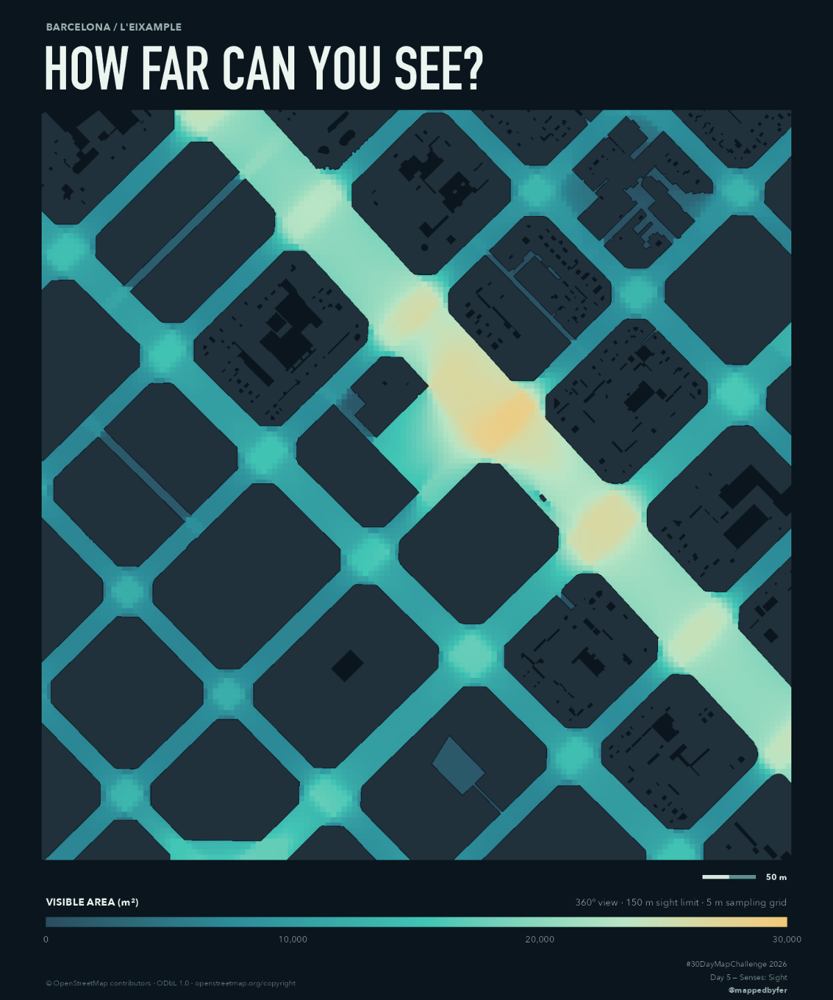

HOW FAR CAN YOU SEE?

A city seen from 8,833 viewpoints.
Barcelona’s regular Eixample grid holds a changing geography of potential views. This 700 × 700 m map calculates visibility across streets and open spaces, including the interiors of broad junctions and plazas. Colour shows visible area in m² within a shared 150 m sight limit, using actual building footprints as obstacles.

The idea
Explore how streets, chamfered corners and open spaces shape potential visibility. Blue-grey marks more enclosed positions; mint and gold mark positions with a larger visible area. The map samples the whole selected open-space surface rather than stretching street-centre measurements across plazas. It describes the geometry of this neighbourhood without isolating the causal effect of any one design feature.
How it was made
Real OSM footprints were validated and merged in EPSG:25831. A 5 m grid divides street-connected spaces and mapped pedestrian areas; each clipped cell component has its own observer. From 8,833 positions, rays sweep 360° and stop at the first building or 150 m. Extra rays at building corners resolve occlusion changes. Every isovist passed building-overlap and independent sightline checks. Colour is linear from 0 to 30,000 m². A single rasterised fill removes cell seams; analytical resolution remains 5 m. The poster is 3000 × 3600 pixels. Download the reproducible R workflow, exact source snapshot and validation reports (ZIP).
Sources & limitations
© OpenStreetMap contributors, via the Overpass API, under ODbL 1.0. The provider reported a snapshot of 15 July 2026; the original download was 4 November 2026. This is a horizontal, 360° building-only model: heights, terrain, trees, vehicles, windows and street furniture are omitted. Isolated courtyards are excluded. The derived sampling surface is not a surveyed inventory of accessible pavement, and potential visible area does not directly measure human perception.